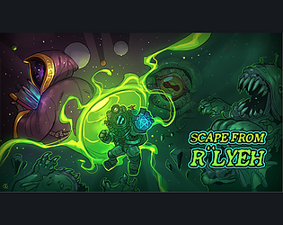

WALTZ OF AURI
Waltz of Auri es un juego narrativo creado en la jam Talentum Telefónica de 2017. Nuestro grupo ganó el primer premio de la JAM de 5000€. Único programador del equipo.
FAST
Fast es una prueba de concepto de juego roguelike simple. Juego creado únicamente por mí. El jugador tendrá que encontrar una llave y escapar de cada nivel.
SPONS
Spons es un juego de móvil creado por el estudio Rumble Moon. Es un juego procedimental en el que el jugador tendrá que avanzar hasta el final y obtener la mejor puntuación posible.
Fruit Box
Fruit Box es un juego originalmente creado para móvil para la incubadora Demium Games. Creado por Rumble Moon, únicamente programado por mí. Fruit Box es un juego de puzzles donde hay que tirar las frutas a cada caja.
Marye
Marye es un juego narrativo que se asoma a la vida de una mujer que trata de compaginar maternidad y trabajo, mientras intenta lidiar con las situaciones sociales que ello implica. Inspirada en la tragedia de Federico García Lorca.

Escape from R'Lyeh
Escape from R'Lyeh es un juego cooperativo entre dos jugadores, donde ambos tendrán que desentrañar los secretos de un templo perdido debajo del mar. Juego creado para la Talentum Jam Telefónica 2018 en 24 horas.
TRPG Meets Games
TRPG Meets Games es un juego creado para la Ludum Dare Jam 41 en solitario en 48 horas. El tema de la jam era mezclar géneros, así que es una mezcla entre un TRPG típico (Fire Emblem) con algunos juegos clásicos como Pacman o Arkanoid.
Time
Time es un juego experimental creado para la Ludum Dare 43 en solitario en 48 horas. Es un juego sobre organizar tu tiempo reducido a la mínima expresión, simplemente decidir que vas a hacer con tu tiempo cada día.
NecRomancer
NecRomancer es un juego creado para la jam de la asociación de estudiantes de videojuegos en 2016. En el controlas a un nigromante esperando a su cita en una calle muy concurrida, con lo que tendrá que evitar tocar a nadie.
BitBullet
BitBullet es un juego creado para la Ludum Dare 36 en solitario en 48 horas. Es una vuelta de hoja a los juegos narrativos basados en texto dándole un toque de acción después de un plot twist.
Greyer
Greyer es un juego experimental personal creado para la Ludum Dare 38 en la modalidad en solitario. Se hacen pruebas con la UI de Unity.
Api
Api es un juego ganador de la Hack For Good 2016 en la categoría de diseño. Se intenta crear un tamagochi para prevenir el bullying infantil.
Fire Night
Fire Night es un juego creado para la Ludum Dare 37, en la modalidad en solitario. Es un juego de acción donde hay que apagar los distintos fuegos que se expanden en tu casa.
Mummy Pyramid
Mummy Pyramid es un juego originalmente creado para móvil para la incubadora Demium Games. Es un prototipo no acabado de un juego de acción infinito que sucede en el interior de una pirámide.
Reach The Henyard
Reach The Henyard es un juego originalmente creado para móvil para la incubadora Demium Games. Es un juego completo que fue retirado de la Play Store por la propia incubadora. Es un juego de plataformas
sencillo donde tendrás que posarte sobre tu nido e incubar huevos.